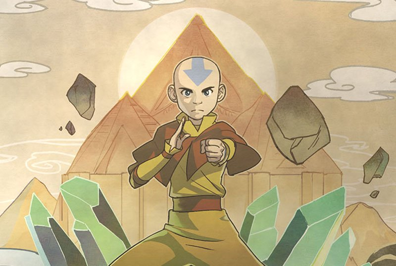

About Aang
Avatar Aang was a twelve year old boy who was born into the Air Nation and eventually was found by Katara frozen in a block of ice. By then, he was 112 years old, but still remained young in appearance and in thinking. He went on to save the world from the Fire Nation, as they were seeking to conquer the Earth Kingdom and terrorize non-firebenders.
Avatar Aang and the Elements
Avatar Aang's Abilities:
- He knows how to Airbend
- He knows how to Waterbend
- He knows how to Earthbend
- He knows how to Firebend
Avatar Aang's Friends
Avatar Aang has a group of friends known as "Team Avatar" Click on the links below to read more about them!